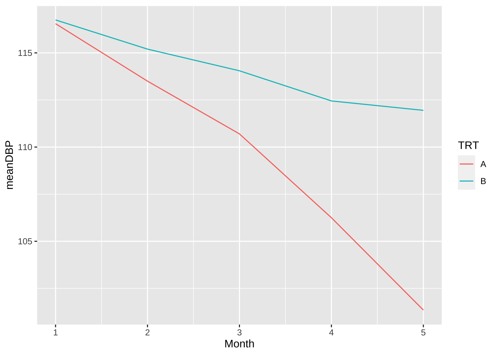

제 1 장 공분산분석
의학연구에서는 치료법이나 약물의 효과를 알아보기 위한 다양한 실험이 진행된다.
치료법이나 약품의 효과에 대하여 기초 연구(화학실험, 동물실험 등)가 어느 정도 진행되어 기대되는 효능이 있으며 큰 부작용이 없다고 판단되면 인간에게 치료법을 적용하거나 약품을 사용하는 임상실험(clinical trial)을 진행햔다.
임상실험은 많은 경우 병렬 계획(parallel design)에 의거한 일원배치법을 사용한다.

임상실험에서 요인은 치료 방법(treatmanet)이며 보통의 경우 2개의 수준를 가진다. 두 개의 수준 중 하나는 실험자가 연구대상으로 고려한 효과가 기대되는 치료/약품(active)이며 다른 하나의 수준은 제어 수준(control)이다. 임상실험에서는 대부분의 경우 효과가 있는 치료나 약품을 적용하지 않아도 위약효과(placebo effect)가 나타나기 때문에 실험자가 사용하려고 하는 치료법의 효과는 언제나 제어군에서 나타난 효과와의 차이로 파악해야 한다.
병렬 계획은 환자가 임의로 선택된 하나의 치료/약품만 받는 실험을 말한다. 참고로 뒤에서 살펴보겠지만 환자가 2개 이상의 치료을 받는 교차실험(crossover design)도 있다.
1.1 공분산 분석의 개요
많은 임상 실험에서는 실험의 질과 수준이 실제 환자를 치료하는 환경과 동일하게 유지하는 것을 원칙으로 한다. 따라서 임상실험은 동장이나 연구실에서 수행하는 매우 정교하게 통제된 실험과 다르게 치료방법 외의 다양한 요인들이 영향을 미치게 된다. 이러한 다양한 요인들은 맹검화(blinding) 등 다양한 실험 기법을 사용하여 통제된다.
다양한 요인의 영향을 통제하려는 시도에도 불구하고 대표적으로 실험의 결과에 영향을 미치는 요인은 환자의 초기 상태(baseline)과 기관/병원(center/hospital effect)이다. 임상실험에 참가하는 환자들은 약품을 처리받기 전의 상태가 모두 다르기 때문에 처리의 효과뿐만이 아니라 환자의 초기 상태도 최종 반응값에 영향을 미친다. 또한 대부분의 임상실험은 여러 개의 병원(또는 지역, 나라)에서 동시에 실행되므로 병원, 지역, 국가의 특성에 따라서 임상시험의 결과에 영향을 미친다.
이렇게 실험에서 주요하게 고려하는 요인인 아닌 다른 요인이 영향을 미친다고 판단될 때 그 요인을 공변량 (covariate) 라고 부르며 공변량을 모형에 포함시키는 분석을 공분산분석(Analysis of Covariance; ANCOVA)라고 부른다.
공변량의 형태는 보통 실험 단위가 가지고 있는 특성이나 실험자가 가진 특성을 반영한다. 예를 들어 다음과 같은 공변량의 형태가 있다.
- 교육 방법을 비교하는 실험에서 학생들이 가진 학습 역량
- 혈압 강하를 위한 약품에 대한 실험에서 임상 참가 전 환자의 혈압과 나이
- 천식에 대한 약품 실험이 여러 국가에서 실행될때 국가의 효과
- 암을 진단하는 방법에 대한 임상 실험이 다수의 병원에서 진행될 때 병원의 효과
일반적으로 임상실험이나 관측연구에서는 관심이 있는 처리(treatment)나 요인(factor)뿐만 아니라 다른 요인들도 반응변수에 영향을 미친다. 이러한 다른 요인들의 영향을 제거하기 위한 방법은 여러가지가 있지만 실험인 경우 임의화 방법(randomization)으로 그 영향을 상쇄시킬 수 도 있고 관측연구인 경우에는 사례-대조연구 방법을 이용하여 그 영향을 최소화하려고 노력을 한다. 하지만 다양한 통제 방법에도 불구하고 여러 가지 변수들이 반응변수에 영향을 미친다. 이러한 경우에 중요한 요인을 모형에 포함시켜서 그 영향을 반영하고 동시에 자료의 변동을 부가적으로 설명해주는 방법이 공분산 분석이다.
1.2 공분산분석의 모형
실험에서 공변량은 연속형 변수일 수도 있고 범주형일 수 도 있다. 만약 공변량이 범주형 변수인 경우 분석의 방법은 이원배치 분산분석과 매우 유사하다. 이 절에서는 공변량은 연속형 변수라고 가정하고 분석 방법을 논의할 것이다. 또한 공변량이 2개 이상인 경우도 있지만 이 절에서는 공변량이 하나인 경우만 고려한다.
공분산분석의 모형은 일원배치 분산분석 모형(처리의 수는 \(a\)개, 반복수는 \(r\))에 공변량 \(x\)의 효과를 다음과 같이 더해주는 것이다.
\[\begin{equation} y_{ij} = \mu + \alpha_i + \beta(x_{ij} - \bar x_{..}) + e_{ij}, \quad i=1,2,\dots,a, ~~ j=1,2,\dots,r \tag{1.1} \end{equation}\]모형 (1.1)에서 \(x_{ij}\)는 관측값 \(y_{ij}\)의 공변량이며 이를 중심화(centering)하여 회귀모형의 독립변수로 표현한다. 모형 (1.1) 에서 \(\bar x_{..} = sum_i sum_j x_{ij}/(ar)\) 로 공변량 값의 전체 평균이다.
참고로 공변량을 중심화 하지 않는 모형은 다음과 같이 표현할 수 있다.
\[\begin{align*} y_{ij} & = \mu + \alpha_i + \beta(x_{ij} - \bar x_{..}) + e_{ij} \\ & = \beta_0 + \alpha_i + \beta x_{ij} + e_{ij} \\ & = \beta_{0i} + \beta x_{ij} + e_{ij} \end{align*}\]1.3 모수의 추정과 가설 검정
모형 (1.1)에서 각 모수의 추정은 최소제곱법을 이용하여 추정하며 부가조건 \(\sum_i \alpha_i =0\) 을 이용하면 다음과 같은 추정량을 얻을 수 있다
\[\begin{align*} \hat \mu & = \bar y_{..} \\ \hat \alpha_i & =\bar y_{i.} - \bar y_{..} -\hat \beta(\bar x_{i.} -\bar x_{..}) \\ \hat \beta & = \frac{ \sum_i \sum_j (x_{ij} - \bar x_{i.})(y_{ij}-\bar y_{i.})}{\sum_i \sum_j (x_{ij} - \bar x_{i.})^2} \end{align*}\]ANCOVA 모형에서는 다음과 같은 두 가지 가설을 검정할 수 있다.
ANOVA 모형에서와 같이 각 그룹의 평균에 대한 검정을 할 수 있고
\[\begin{equation*} H_0: \alpha_1 = \alpha_2 =...=\alpha_a =0 \quad \text{vesus} \quad H_1: \text{ not } H_0 \end{equation*}\]또한 공변량의 효과에 대한 검정도 할 수 있다.
\[\begin{equation} H_0: \beta =0 \quad \text{vesus} \quad H_1: \beta \ne 0 \tag{1.2} \end{equation}\]1.4 예제: 혈압 강하를 위한 임상 실험
공분산분석의 개념을 이해앟기 위한 예제로서 혈압 강하를 위한 임상 실험에서 얻는 자료를 분석해 보자.
자료는 (Chen, Peace, and Zhang 2017) 에 나온 자료이며 화일 dbp.txt 에 저장되어 있다.
혈압 강하를 위한 임상실험은 2개의 처리 집단(A 와 B) 로 각각 20명이 실험에 참가하였다. 약을 복용하기 전에 혈압을 측정하고(DBP1) 약을 복용한 후 한 달 간격으로 4번 측정을 하였다 (DBP2-DBP5).
최종적으로 관심있는 반응변수는 약품을 복용하기 전 혈압에서 4개월 후 혈압이 변화한 차이이다.
따라서 반응변수 diff 는 DBP5에서 DBP1을 뺀 값이다.
또한 공변량으로서 성별(Sex)과 연령(Age)를 측정하였다. 공분산분석에서는 공변량으로 연령을 고려할 것이다.
다음은 화일에서 자료를 읽고 정리하는 프로그램이다.
dpb <- read.csv("dbp.txt", sep="", header=TRUE)
df <- dpb %>% mutate(diff = DBP5 -DBP1)
head(df)## Subject TRT DBP1 DBP2 DBP3 DBP4 DBP5 Age Sex diff
## 1 1 A 114 115 113 109 105 43 F -9
## 2 2 A 116 113 112 103 101 51 M -15
## 3 3 A 119 115 113 104 98 48 F -21
## 4 4 A 115 113 112 109 101 42 F -14
## 5 5 A 116 112 107 104 105 49 M -11
## 6 6 A 117 112 113 104 102 47 M -15처리 그룹간에 시간에 따른 혈압의 평균적인 변화를 그름으로 살펴보자.
df1 <- df %>% select(Subject, TRT, DBP1, DBP2, DBP3, DBP4, DBP5) %>% gather(TimePoint, dbp,DBP1, DBP2, DBP3, DBP4, DBP5)
df1s <- df1 %>% group_by(TRT, TimePoint) %>% summarise(meanDBP=mean(dbp))## `summarise()` has grouped output by 'TRT'. You can override using the `.groups` argument.df1s$Month <- rep(1:5,2)
df1s %>% ggplot(aes(x = Month, y = meanDBP, colour = TRT)) + geom_line() 
이제 두 처리 그룹간에 혈압의 변화 diff 에 대하여 기초통계량으로 살펴보자.
dfs2 <- df %>% group_by(TRT) %>% summarise(mean=mean(diff), median= median(diff), sd=sd(diff), min=min(diff), max=max(diff))
dfs2## # A tibble: 2 x 6
## TRT mean median sd min max
## <chr> <dbl> <dbl> <dbl> <int> <int>
## 1 A -15.2 -15 2.97 -21 -9
## 2 B -4.8 -5.5 2.42 -8 1두 처리 그룹간에 혈압의 변화에 대하여 그림으로 살펴보자.
ggplot(df, aes(TRT, diff)) + geom_boxplot()A 그룹이 B 그룹보다 평균적으로 혈압이 약 10 mmHg 더 감소하였다.
1.5 분산분석
1.5.1 공변량이 없는 일원배치법에서의 분산분석
우리는 아래와 같은 일원배치 실험계획에서 처리 효과에 대한 검정을 위한 분산분석표가 아래와 같이 주어지는 것을 배웠다.
\[ y_{ij} = \mu + \alpha_i + e_{ij} \]
| 요인 | 제곱합 | 자유도 | 평균제곱합 | \(F_0\) | p-값 |
|---|---|---|---|---|---|
| 처리 | \(SS_A\) | \(\phi_A = a-1\) | \(MS_A=SS_A/\phi_A\) | \(F_0=MS_A/MS_E\) | \(P[F(\phi_A, \phi_E) > F_0 ]\) |
| 잔차 | \(SS_E\) | \(\phi_E=a(r-1)\) | \(MS_E=SS_E/\phi_E\) | ||
| 총합 | \(SS_T\) | \(\phi_T = ar-1\) |
위의 분산분석표에서 다음과 같이 제곱합의 분해가 얻어진다.
\[\begin{equation} SS_T = SS_A + SS_E \tag{1.3} \end{equation}\]혈압 자료에 처리 효과만 있는 일원배치법으로 분산분석표를 구해보자. 두 처리 집단 사이에 혈압의 변화에 대한 차이는 매우 유의하다. 참고로 가설 검정에 이용되는 F-값은 147.63 이다.
lmres1 <- lm(diff~TRT, data=df)
lmaov1 <- anova(lmres1)
lmaov1## Analysis of Variance Table
##
## Response: diff
## Df Sum Sq Mean Sq F value Pr(>F)
## TRT 1 1081.6 1081.60 147.63 1.169e-14 ***
## Residuals 38 278.4 7.33
## ---
## Signif. codes: 0 '***' 0.001 '**' 0.01 '*' 0.05 '.' 0.1 ' ' 11.5.2 공변량이 있는 일원배치법에서의 분산분석
공변량이 포함된 모형 (1.1) 에 대한 분산분석표는 다음과 같이 주어진다.
| 요인 | 제곱합 | 자유도 | 평균제곱합 | \(F_0\) | p-값 |
|---|---|---|---|---|---|
| 변량 | \(SS_X\) | \(\phi_X=1\) | \(MS_X=SS_X/\phi_X\) | \(F_X=MS_X/MS_E\) | |
| 처리 | \(SS_A\) | \(\phi_A = a-1\) | \(MS_A=SS_A/\phi_A\) | \(F_0=MS_A/MS_E\) | \(P[F(\phi_A, \phi_E) > F_0 ]\) |
| 잔차 | \(SS'_E\) | \(\phi_E=a(r-1)-1\) | \(MS'_E=SS'_E/\phi_E\) | ||
| 총합 | \(SS_T\) | \(\phi_T = ar-1\) |
이제 혈압 자료에 연령을 공변량으로 포함한 일원배치법으로 공분산분석표를 구해보자. 두 처리 집단 사이에 혈압의 변화에 대한 차이는 매우 유의하다. 참고로 가설 검정에 이용되는 F-값은 176.03 로서 공변량이 없는 경우(147.63)보다 크다.
lmres2 <- lm(diff~TRT + Age, data=df)
lmaov2 <- anova(lmres2)
lmaov2## Analysis of Variance Table
##
## Response: diff
## Df Sum Sq Mean Sq F value Pr(>F)
## TRT 1 1081.60 1081.60 176.0395 1.228e-15 ***
## Age 1 51.07 51.07 8.3119 0.006525 **
## Residuals 37 227.33 6.14
## ---
## Signif. codes: 0 '***' 0.001 '**' 0.01 '*' 0.05 '.' 0.1 ' ' 1공변량이 있는 경우 분산분석표에서 다음과 같이 제곱합의 분해가 얻어진다.
\[\begin{equation} SS_T = SS_A + SS_X + SS'_E \tag{1.4} \end{equation}\]이제 공변량이 없는 경우의 제곱합의 분해 (1.3) 과 있는 경우의 분해 (1.3) 을 보면 공변량이 없는 경우의 오차제곱합이 두 개의 제곱합으로 분해되는 것을 알 수 있다.
\[\begin{equation} SS_E = SS_X + SS'_E \tag{1.5} \end{equation}\]즉, 만약 반응변수와 공변량의 상관관계가 크면 공변량에 대한 제곱합 \(SS_X\)가 커질 것이며 이는 공변량이 있는 모형에서 처리 효과를 검정하는 경우 사용되는 오차제곱합 \(SS'_E\) 가 공변량이 없는 경우의 \(SS_E\) 보다 작아지는 것을 알 수 있다.
결론적으로 반응변수와 공변량의 상관관계가 크면, 공변량을 포함하는 모형에서 처리 효과를 검정하는 \(F\)-값이 공변량을 포함하지 않는 것보다 일반적으로 커지게 된다. 이는 공변량이 처리효과로 설명하지 못하는 변동 중의 일부를 설명하기 때문에 처리효과에 대한 검정력이 높아지게 된다.
공변량의 유무에 따른 제곱합의 분해의 차이를 그림으로 나타내면 다음과 같다.
ssq1 <- data.frame(effect=c("TRT", "Residuals"), sumsquare=lmaov1$"Sum Sq")
ssq2 <- data.frame(effect=c("TRT","Age", "Residuals"), sumsquare=lmaov2$"Sum Sq")
par(mar = c(2, 2, 2, 2))
pie(ssq1$sumsquare, labels = ssq1$effect, main="ANOVA")
pie(ssq2$sumsquare, labels = ssq2$effect, main = "ANCOVA")
참고로 공변량을 포함하는 모형에서 오차제곱합의 자유도는 포함하지 않는 모형보다 1개가 줄어든다. 이는 공변량에 의한 제곱합의 자유도 1개가 추가되기 때문이다.
1.6 공분산분석 모형의 해석
이제 위에서 구한 공분산분석 모형 (1.1)에 대한 추정식을 살펴보자.
summary(lmres2)##
## Call:
## lm(formula = diff ~ TRT + Age, data = df)
##
## Residuals:
## Min 1Q Median 3Q Max
## -5.9039 -1.6516 -0.0091 1.1557 5.2299
##
## Coefficients:
## Estimate Std. Error t value Pr(>|t|)
## (Intercept) -6.78086 2.97236 -2.281 0.02838 *
## TRTB 10.13149 0.78936 12.835 3.38e-15 ***
## Age -0.17323 0.06009 -2.883 0.00653 **
## ---
## Signif. codes: 0 '***' 0.001 '**' 0.01 '*' 0.05 '.' 0.1 ' ' 1
##
## Residual standard error: 2.479 on 37 degrees of freedom
## Multiple R-squared: 0.8328, Adjusted R-squared: 0.8238
## F-statistic: 92.18 on 2 and 37 DF, p-value: 4.243e-15위의 추정 결과를 이용하여 혈압 변화의 평균에 대하여 다음과 같은 추정식을 고려할 수 있다.
extract_eq(lmres2, use_coefs = TRUE) \[ \operatorname{\widehat{diff}} = -6.78 + 10.13(\operatorname{TRT}_{\operatorname{B}}) - 0.17(\operatorname{Age}) \]
이제 처리 그룹(A, B)과 연령 간의 관계를 그림으로 그려보면 다음과 같이 나타낼 수 있다.
연령이 증가하면 혈압의 강화 효과가 점점 더 커지는 것을 알 수 있으며 통계적으로도 유의하다.
plot(diff~Age,las=1,pch=as.character(TRT), df, xlab="Age", ylab="DBP Change")
abline(lmres2$coef[1], lmres2$coef[3],lwd=2, lty=1)
abline(lmres2$coef[1]+lmres2$coef[2], lmres2$coef[3],lwd=2, lty=4)